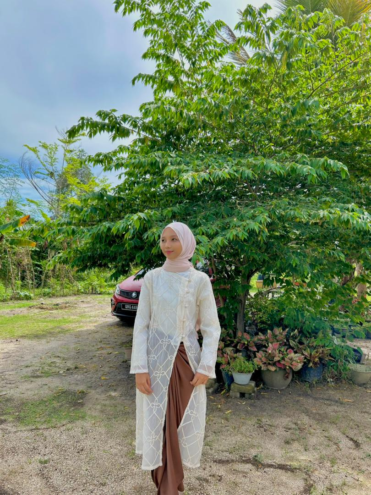
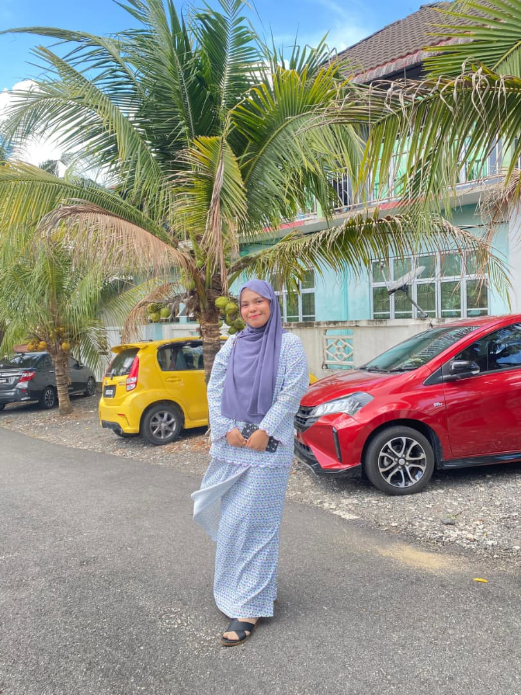
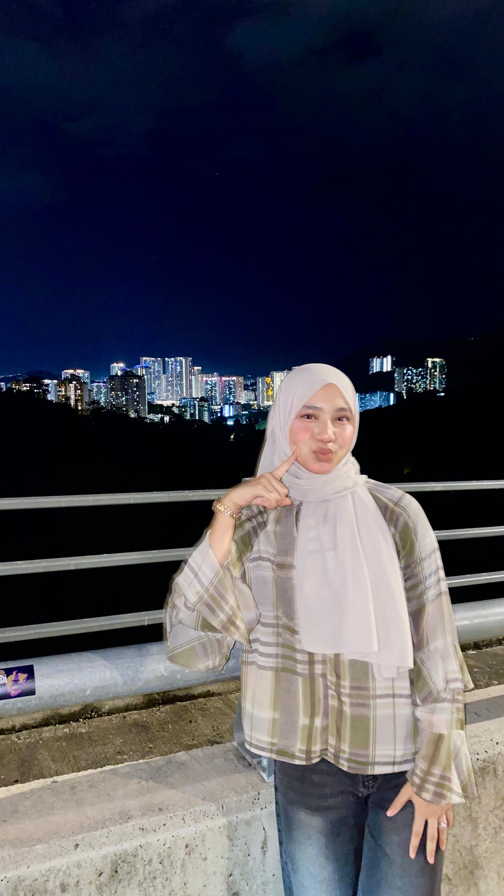
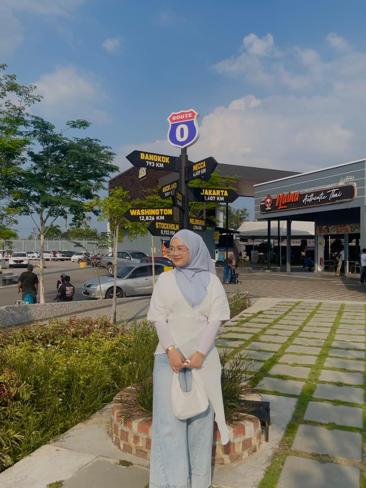
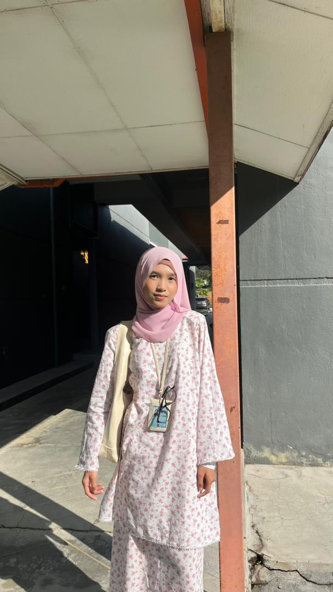
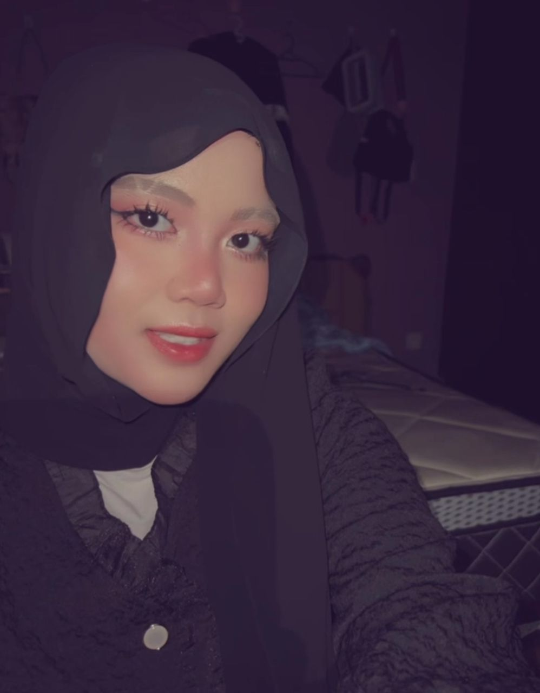

My Friends ✿
Beautiful friendships and memories that make my life happier and more meaningful.
🏫 Highschool Best Friends

Nasuha
Always by my side during both happy and sad moments. She knows me well and is usually the first person to chat with me every day. Her support and friendship mean a lot to me. My comfort friend.

Syaa
Like an older sister to me. She always gives advice, and looks out for me whenever I need help. Someone who made school life much more enjoyable. Also my comfort friend.

Ain
My childhood best friend since we were 7 years old. We met in primary school and have remained close friends throughout the years. We have shared many memories together, and I am grateful that our friendship is still strong today. She's still the best.
🏠 Housemates

Nisya
I have known her since high school, but I never expected that we would become such good friends. Now, we are roommates, housemates, and classmates. We often go to class together, and she is someone I can depend on.

Dina
We were classmates, but we were not very close at first. After becoming housemates, we grew much closer. Her cheerful personality always makes me laugh, even when I am stressed. Full of chaotic but fun memories together.

Auni
Although she can be a bit strict at times, she is very helpful and supportive. She is always willing to help me when I do not understand something. A comforting presence during difficult days.
🎓 University Friends
Shafiqah
My roommate during Semester 1. Even though we are now in different classes and different courses, we remain close friends. We often go out to eat together and regularly keep in touch. Whenever something good or bad happens, we always talk to each other and support one another.

Adrieanna
Also my roommate back in Semester 1. Even though we do not meet as often anymore, we have remained good friends. Whenever we meet, we always reminisce about our memories from the past and catch up on each other's lives. A friendship filled with support and meaningful talks.

Far
My classmate whom I get along well. Her funny personality and sense of humor can make anyone laugh out loud. Her joke always brings positive energy to those around her, and spending time with her is always enjoyable and full of laughter.